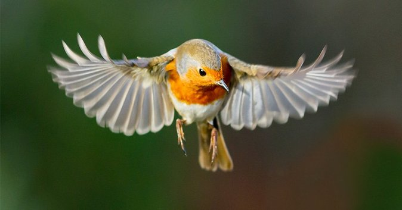

Mammals

Birds are vertebrate animals adapted for flight.
Many can also run, jump, swim, and dive. Some, like penguins, have lost the ability to fly but retained their wings. Birds are found worldwide and in all habitats. The largest is the nine-foot-tall ostrich. The smallest is the two-inch-long bee hummingbird.
Everything about the anatomy of a bird reflects its ability to fly. The wings, for example, are shaped to create lift. The leading edge is thicker than the back edge, and they are covered in feathers that narrow to a point. Airplane wings are modeled after bird wings.
The bones and muscles of the wing are also highly specialized. The main bone, the humerus, which is similar to the upper arm of a mammal, is hollow instead of solid. It also connects to the bird’s air sac system, which, in turn, connects to its lungs. The powerful flight muscles of the shoulder attach to the keel, a special ridge of bone that runs down the center of the wide sternum, or breastbone. The tail feathers are used for steering.
Birds have a unique digestive system that allows them to eat when they can—usually on the fly—and digest later. They use their beaks to grab and swallow food. Even the way a bird reproduces is related to flight. Instead of carrying the extra weight of developing young inside their bodies, they lay eggs and incubate them in a nest.
The fossil record shows that birds evolved alongside the dinosaurs during the Jurassic period 160 million years ago. The best known fossil is archaeopteryx, which was about the size of a crow.
Birds in our National Park
-
- Accentors - Prunellidae
- Avocets - Recurvirostridae
- Barn Owl - Tytonidae
- Bitterns / Egrets / Herons / Night-Herons - Ardeidae
- Blackbirds - Icteridae
- Chickadees - Paridae
- Cormorants - Phalacrocoracidae
- Cranes - Gruidae
- Creepers - Certhiidae
- Cuckoos - Cuculidae
- Dippers - Cinclidae
- Falcons - Falconidae
- Finches - Fringillidae
- Flycatchers - Tyrannidae
- Gnatcatchers - Polioptilidae
- Grebes - Podicipedidae
- Gulls / Terns - Laridae
- Hawks / Kites / Eagles - Accipitridae
- Hummingbirds - Trochilidae
- Ibises - Threskiornithidae
- Jaegers - Stercorariidae
- Jays / Crows / Magpies - Corvidae
- Kingfishers - Alcedinidae
- Kinglets - Regulidae
- Larks - Alaudidae
- Longspurs and Snow Buntings - Calcariidae
- Loons - Gaviidae
- Murrelets - Alcidae
- New World Sparrows - Passerellidae
- Nightjars - Caprimulgidae
- Nuthatches - Sittidae
- Old World Sparrows - Passeridae
- Osprey - Pandionidae
- Owls - Strigidae
- Pelicans - Pelecanidae
- Pigeon / Doves - Columbidae
- Pipits - Motacillidae
- Plovers - Charadriidae
- Quails - Odontophoridae
- Rails - Rallidae
- Sandpipers - Scolopacidae
- Shearwaters - Procellariidae
- Shrikes - Laniidae
- Starlings - Sturnidae
- Storks - Ciconiidae
- Swallows - Hirundinidae
- Swans / Geese / Ducks - Anatidae
- Swifts - Apodidae
- Tanagers / Cardinals / Buntings - Cardinalidae
- Thrashers / Mockingbirds / Catbirds -
- Thrushes - Turdidae
- Upland Game Birds - Phasianidae
- Vireos - Vireonidae
- Vultures / Condors - Cathartidae
- Warblers - Parulidae
- Waxwings - Bombycillidae
- Woodpeckers - Picidae
- Wrens - Troglodytidae
- Yellow-breasted Chats - Icteriidae